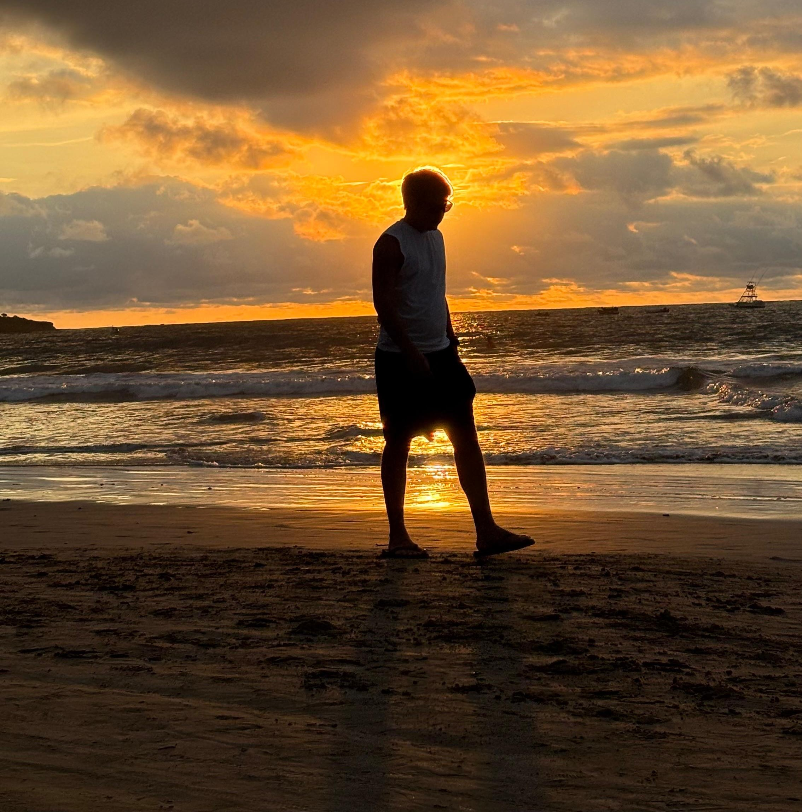

Aventura y descubrimiento
Explorar nuevos lugares siempre ha sido más que ver paisajes: es conocer historias, tradiciones y personas que dejan huella.
Explora mis viajes
Encuentra cada país que he visitado, descubre mis actividades favoritas y conserva tus recuerdos de viaje en un espacio privado y elegante.
Cargando países...
Puedes ver aquí descripción, lugares destacados, actividades y fotos.
Experiencias destacadas
Explorar nuevos lugares siempre ha sido más que ver paisajes: es conocer historias, tradiciones y personas que dejan huella.
Cada imagen representa una vivencia concreta: desde puestas de sol urbanas hasta rutas naturales inolvidables.
Me gusta planificar destinos que conecten cultura, gastronomía y experiencias únicas, siempre con espacio para la espontaneidad.
Sobre mí

Me encanta descubrir nuevas culturas, registrar cada detalle y mantener un diario visual de los destinos que más me impactan.
Soy un viajero curioso que documenta cada destino con fotografías, notas y recomendaciones personales. Me encanta combinar cultura, gastronomía y paisaje en cada ruta para crear recuerdos completos y auténticos.
Mi historia
Este proyecto nació para capturar las experiencias de cada viaje, desde el primer destino hasta las rutas que aún están por descubrir.
Mi primer viaje internacional hecho por mi cuenta me inspiró a documentar cada experiencia con fotos, notas y recomendaciones.
Ruta por varias ciudades, donde aprendí a conectar la fotografía con cada historia local.
Este sitio se convirtió en un espacio organizado y elegante para mis recuerdos de viaje.
Logros de viaje
Registro completo de todos los países que he visitado, listos para mostrar y actualizar.
Historias, actividades y momentos destacados que documentan cada viaje.
Interfaz cuidada, responsive y con modo oscuro para una experiencia elegante.
Mejores destinos
Montañas, cultura andina y paisajes que mezclan historia y naturaleza.
Playas, mar turquesa y pueblos costeros con sabor local e inolvidables puestas de sol.
Ciudades con historia, museos y arquitectura que cuentan siglos de vivencias.